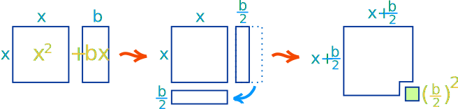
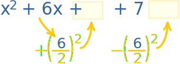
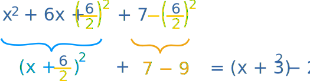
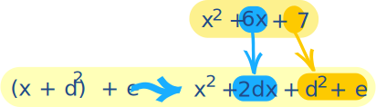
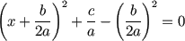
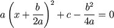

Completing the Square
"Completing the Square" is where we ...
| ... take a Quadratic Equation like this: |
and turn it into this: |
|
| ax2 + bx + c = 0 | a(x+d)2 + e = 0 |
But if you have time, let me show you how to "Complete the Square" yourself.
Completing the Square
Say we have a simple expression like x2 + bx. Having x twice in the same expression can make life hard. What can we do?
Well, with a little inspiration from Geometry we can convert it, like this:

As you can see x2 + bx can be rearranged nearly into a square ...
... and we can complete the square with (b/2)2
In Algebra it looks like this:
| x2 + bx | + (b/2)2 | = | (x+b/2)2 |
| "Complete the Square" |
So, by adding (b/2)2 we can complete the square.
The result of (x+b/2)2 has x only once, which is easier to use.
Keeping the Balance
Now ... we can't just add (b/2)2 without also subtracting it too! Otherwise the whole value changes.
So let's see how to do it properly with an example:
| Start with: | |
| ("b" is 6 in this case) | |
| Complete the Square: | |
|
|

Also subtract the new term |
|
Simplify it and we are done. |
|
|  | |
The result:
x2 + 6x + 7 = (x+3)2 − 2
And now x only appears once, and our job is done!
A Shortcut Approach
Here is a quick way to get an answer. You may like this method.
First think about the result we want: (x+d)2 + e
After expanding (x+d)2 we get: x2 + 2dx + d2 + e
Now see if we can turn our example into that form to discover d and e
Example: try to fit x2 + 6x + 7 into x2 + 2dx + d2 + e

Now we can "force" an answer:
- We know that 6x must end up as 2dx, so d must be 3
- Next we see that 7 must become d2 + e = 9 + e, so e must be −2
And we get the same result (x+3)2 − 2 as above!
Now, let us look at a useful application: solving Quadratic Equations ...
Solving General Quadratic Equations by Completing the Square
We can complete the square to solve a Quadratic Equation (find where it is equal to zero).
But a general Quadratic Equation can have a coefficient of a in front of x2:
ax2 + bx + c = 0
But that is easy to deal with ... just divide the whole equation by "a" first, then carry on:
x2 + (b/a)x + c/a = 0
Steps
Now we can solve a Quadratic Equation in 5 steps:
- Step 1 Divide all terms by a (the coefficient of x2).
- Step 2 Move the number term (c/a) to the right side of the equation.
- Step 3 Complete the square on the left side of the equation and balance this by adding the same value to the right side of the equation.
We now have something that looks like (x + p)2 = q, which can be solved rather easily:
- Step 4 Take the square root on both sides of the equation.
- Step 5 Subtract the number that remains on the left side of the equation to find x.
Examples
OK, some examples will help!
Example 1: Solve x2 + 4x + 1 = 0
Step 1 can be skipped in this example since the coefficient of x2 is 1
Step 2 Move the number term to the right side of the equation:
Step 3 Complete the square on the left side of the equation and balance this by adding the same number to the right side of the equation.
(b/2)2 = (4/2)2 = 22 = 4
Step 4 Take the square root on both sides of the equation:
Step 5 Subtract 2 from both sides:
|
And here is an interesting and useful thing. At the end of step 3 we had the equation: (x + 2)2 = 3
It gives us the vertex (turning point) of x2 + 4x + 1: (-2, -3) |
 |
Example 2: Solve 5x2 – 4x – 2 = 0
Step 1 Divide all terms by 5
Step 2 Move the number term to the right side of the equation:
Step 3 Complete the square on the left side of the equation and balance this by adding the same number to the right side of the equation:
(b/2)2 = (0.8/2)2 = 0.42 = 0.16
Step 4 Take the square root on both sides of the equation:
Step 5 Subtract (-0.4) from both sides (in other words, add 0.4):
Why "Complete the Square"?
Why complete the square when we can just use the Quadratic Formula to solve a Quadratic Equation?
Well, one reason is given above, where the new form not only shows us the vertex, but makes it easier to solve.
There are also times when the form ax2 + bx + c may be part of a larger question and rearranging it as a(x+d)2 + e makes the solution easier, because x only appears once.
For example "x" may itself be a function (like cos(z)) and rearranging it may open up a path to a better solution.
Also Completing the Square is the first step in the Derivation of the Quadratic Formula
Just think of it as another tool in your mathematics toolbox.
Footnote: Values of "d" and "e"
How did I get the values of d and e from the top of the page?
| Start with |  |
| Divide the equation by a |  |
| Put c/a on other side |  |
| Add (b/2a)2 to both sides |  |
| "Complete the Square" |  |
| Now bring everything back... | |
| ... to the left side |  |
| ... to the original multiple a of x2 |  |